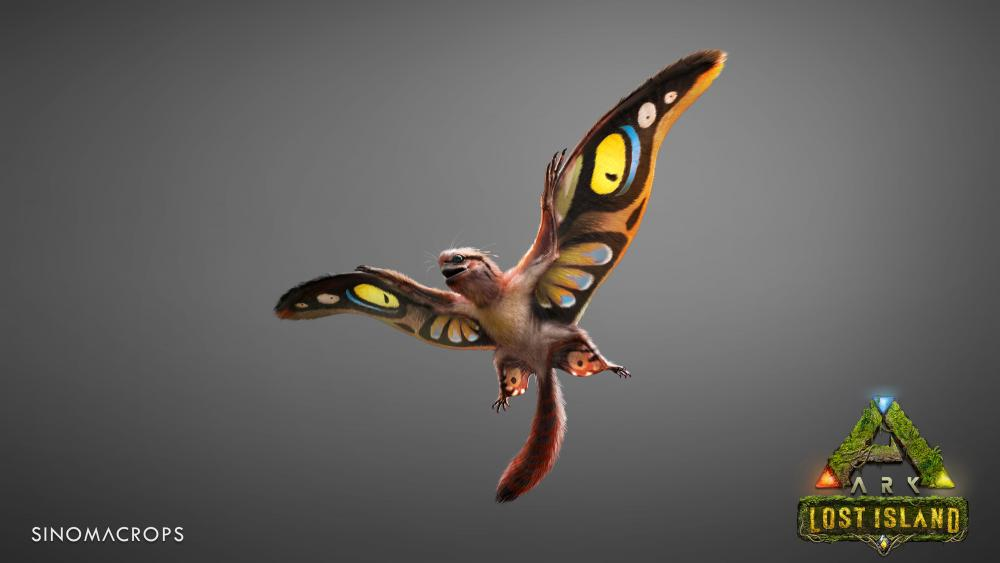

¡Sobrevive, construye y domestica criaturas prehistóricas!
ARK: Survival Evolved es un juego de supervivencia en un mundo abierto donde los jugadores deben recolectar recursos, construir estructuras y domesticar criaturas, como dinosaurios, para sobrevivir en una isla peligrosa llena de desafíos.
El juego ofrece la posibilidad de jugar tanto en solitario como en servidores multijugador donde podrás interactuar con otros jugadores.
En ARK, los jugadores deben tener en cuenta aspectos como el hambre, la sed, la salud y la protección contra los enemigos, mientras exploran un mundo lleno de dinosaurios y otras criaturas fascinantes.
Para más detalles o descargar el juego, visita su página oficial.
